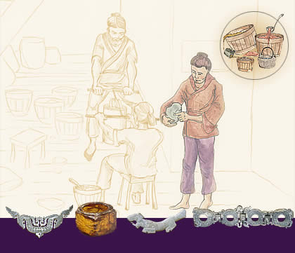

Jade workshopJade, along with bronze, was one of the most prized materials in ancient China. One of the reasons jade was valued was because of its toughness. It's one of the toughest materials on earth and cannot be carved like marble or stone. Instead it needs to be abraded. Find out how jade was worked in ancient China. | ||
|

Why was jade so precious in ancient China?Who wore jade?
| ||